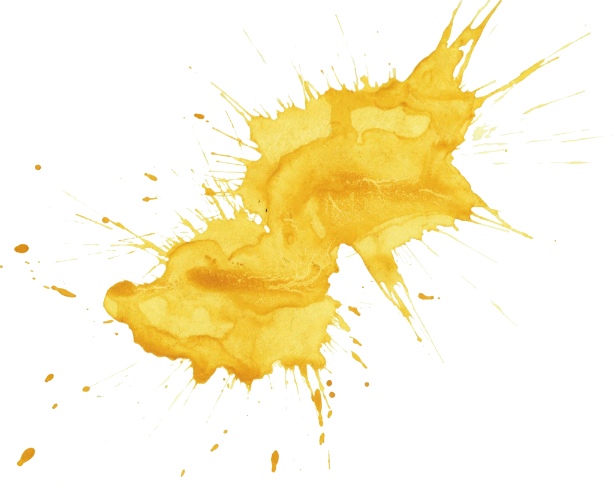

Hello World
This is an awesome value proposition for this product.
Button
This is an awesome value proposition for this product.
Button
Pink is a pale shade of red that is named after a flower of the same name. It was first used as a color name in the late 17th century. According to surveys in Europe and the United States, pink is the color most often associated with charm, politeness, sensitivity, tenderness, sweetness, childhood, femininity and romance.
Yellow is the color between orange and green on the spectrum of visible light. It is evoked by light with a dominant wavelength of roughly 570–590 nm. It is a primary color in subtractive color systems, used in painting or color printing.

The actual color of salmon flesh varies from almost white to light orange, depending on their levels of the carotenoid astaxanthin due to how rich a diet of krill and shrimp the fish feeds on; salmon raised on fish farms are given non-synthetic or artificial coloring in their food.